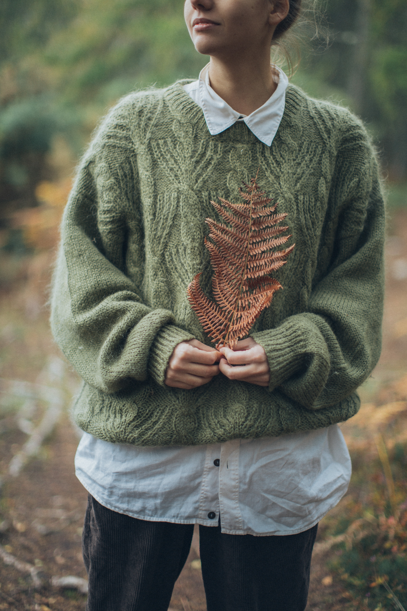
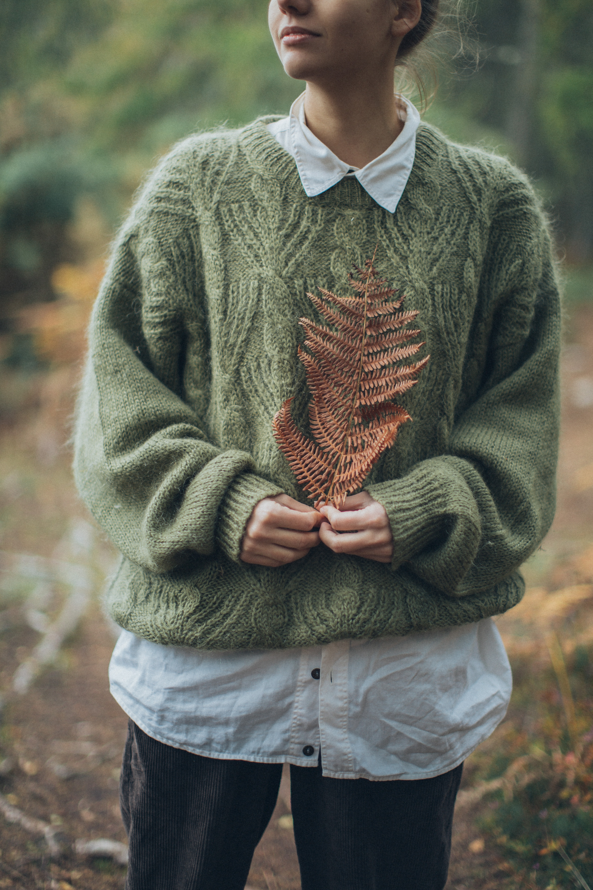

In today's world, clothing is an unquestionable human necessity. women wear clothing to express themselves, shield themselves from the elements, and of course to hide themselves. We all have at least one article of clothing. Many experts concur that video and photography play a major role in fashion website design because they're essential for displaying products the way we want and mandate in our marketing strategies.Finding something they enjoy and feel good in will probably be one of my websites tasks to complete. They will shop for apparel and accessories they want, such as shoes or sweaters, etc. Having Fall apareal is very important to women for many things. My website is here to target the fashion, warmth and trendy fall fashion ideas. A autumn wardrobe must-have are base layers like t-shirts, tank tops, camisoles, and fine gauge sweaters; this season, I'm seeing more fitted shapes and bodysuits. This fall, you should layer these beneath your bomber jackets, blazers, and other outfit completer pieces. These will all be included on my website. Women will be able to look at these clothing peices and figure out what will suit them best.
 
